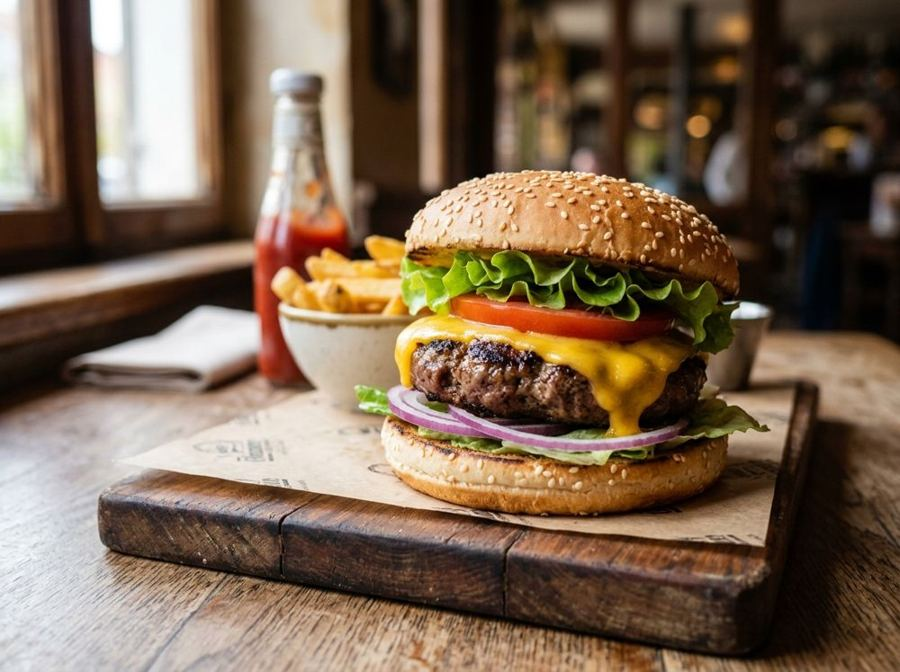

American hamburger
The classic burger with cheddar, lettuce, and tomato.
Ingredients
- Ground beef (80/20 lean-to-fat ratio)600 g
- Burger buns (Brioche style)4
- Sliced Cheddar cheese80 g
- Iceberg lettuce4 leaves
- Vine-ripened tomato150 g
- Red onion80 g
- Pickled gherkins60 g
- Unsalted butter (for toasting)20 g
- Fine salt6 g
- Ground black pepper2 g
Allergens
Gluten, Milk
May contain traces of: Sesame, Sulphites, Eggs.
Method
- Divide the ground beef into four 150g portions and shape into patties slightly wider than the buns, being careful not to overwork or over-compress the meat.
- Chill the patties in the refrigerator for at least 15 minutes to stabilize the fat and ensure they hold their shape during cooking.
- Thinly slice the tomato and onion (approx. 3mm); slice the gherkins lengthwise.
- Slice the buns in half and spread a thin layer of softened butter on the cut sides.
- Preheat a cast-iron griddle or heavy-bottomed pan to 200-220°C (high radiant heat).
- Toast the buns on the griddle for about 60 seconds until golden brown and crisp, creating a barrier against meat juices.
- Season the patties with salt and pepper on the outside just before cooking; sear for 3-4 minutes per side without pressing down with the spatula.
- After flipping the meat, place a cheddar slice on each patty and cover with a lid for 30 seconds to ensure perfect melting.
- Remove the meat from the heat and let it rest for 60 seconds to allow the juices to redistribute.
- Assemble by placing lettuce on the bottom bun (to protect the bread), followed by tomato, the cheeseburger patty, onion, and pickles, then top with the bun crown.
Nutrition facts (estimate)
| Per serving (245 g) | Per 100 g | |
|---|---|---|
| Energy | 3116 kJ / 749 kcal | 1272 kJ / 306 kcal |
| Protein | 38 g | 16 g |
| Carbohydrates | 32 g | 13 g |
| of which sugars | 6.8 g | 2.8 g |
| Fat | 51 g | 21 g |
| of which saturates | 23 g | 9.3 g |
| Fibre | 2.1 g | 0.9 g |
| Salt | 2.5 g | 1.0 g |
AI estimates based on average CREA / USDA data: indicative only, not a substitute for medical or dietitian advice.
Open the recipe in the app for the shopping list, ingredient sheets and nearby shops.